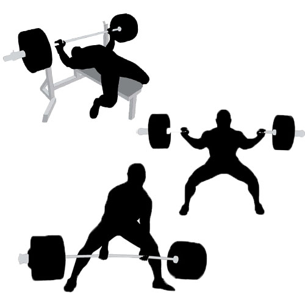
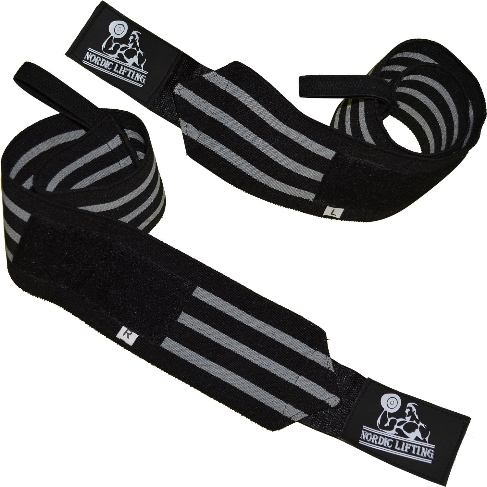
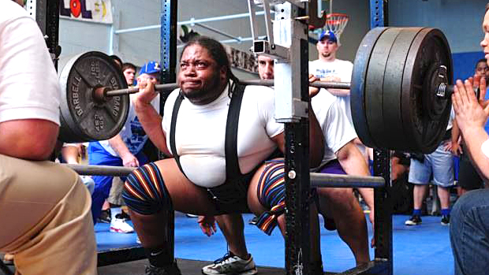
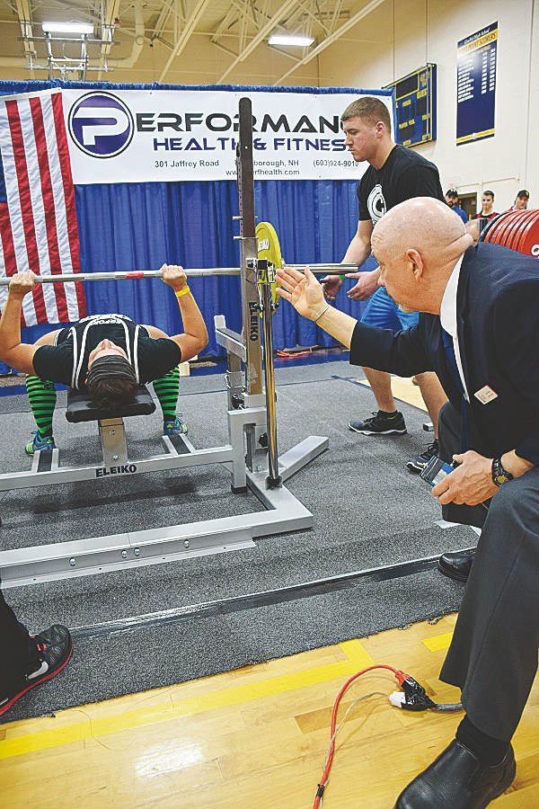

Länk till Svenska Styrkelyftsförbundets regelbok
LYFTMOMENT

Från Wikipedia:
Vid Knäböj vilar en skivstång på en ställning i axelhöjd. Lyftaren lyfter av
stången från ställningen med stången vilandes på skuldrorna samt med handgrepp
om stången. På domarens signal böjer lyftaren knäna och höften tills lårets
övre muskelfäste är lägre än knäts högsta punkt. Därefter pressar lyftaren
tillbaka stången utan sänkning till upprättstående utgångsläge. På domarens
signal lägger lyftaren tillbaka stången på ställningen.
Bänkpress går ut på att man ligger på rygg på en plan bänk med bägge fötterna i golvet. Man greppar en skivstång som ligger på en ställning vid huvudänden och lyfter ut den från ställningen. På signal från domaren sänks skivstången mot bröstet där den skall ligga still, varpå domaren ger signal att stången får pressas. Stången pressas sedan rakt uppåt tills armarna är fullt utsträckta utan att sänkas under lyftet. Därefter ger domaren signal att stången skall läggas tillbaks på ställningen. För godkänt lyft får fötter, rumpa, axlar och huvud ej lyftas/flyttas under lyftet.
I Marklyft ligger en skivstång med vikter på golvet. Det finns två huvudstilar i detta moment, sumo (bred fotställning) och klassisk (smal fotställning). Stången lyfts framför kroppen med båda händerna greppade om stången utan sänkning tills lyftaren är helt uppsträckt med raka ben och rak rygg. Det är ej tillåtet att underlätta lyftet genom att skjuta under låren/knäna. På domarens signal sänker man sedan stången till golvet igen.


MATERIAL
Mer info om enskillda tillbehör finns på sidan: Tillbehör
Från Wikipedia:
I samtliga moment får man använda visst "styrkelyftmaterial" vilket kan
bestå av styrkelyftbälte, knäböjdräkt, knälindor, handledslindor, bänkpresströja
och marklyftdräkt. Dessa hårt åtsittande dräkter i styvt elastiskt material ger
stöd och kan hjälpa lyftaren att klara mer vikter genom att lära sig utnyttja
materialet. Materialet är dock inget krav, utan ett val eller komplement. Vid
de flesta tävlingar används någon form av hjälpmaterial. Vidare är
magnesiumkarbonat tillåtet för bättre grepp liksom barnpuder för bättre glid
då stången glider mot låren i marklyft. Olika skor kan förekomma, då främst
lyftarskor som har en förhöjd bakre klack och är stadig i sidled för att
stabilisera under lyftet.
KROPPSVIKT

Från Wikipedia:
Varje lyftare väger in tidigast 2 timmar före tävlingsstart varpå första
vikten (ingångsvikt) i varje gren anges. Inom Styrkelyft tävlar man
delvis i viktklasser, men i vissa tävlingar istället på poäng. Poängen
erhålls genom att multiplicera resultatet i kg med en koefficient som
är beroende av lyftarens kroppsvikt, ju lättare kroppsvikt desto högre
koefficient. Koefficienten är uträknad genom Wilks formel men finns även
i tabellform. På så vis kan en lyftare med lätt kroppsvikt tävla på lika
villkor mot en med hög kroppsvikt. Bl.a. i Sverige finns ett seriesystem
där klubbar tävlar i mot varandra där varje lyftares resultat i
wilkspoäng summeras för lagets räkning. På större mästerskap delas det
även ut priser till de bästa lyftarna på wilkspoäng
BEDÖMNING

Från Wikipedia:
Alla lyft bedöms av tre domare som sitter på behörigt avstånd runt
lyftaren. Varje domare ger med signaler godkänt (vitt) eller underkänt
(rött) efter utfört lyft. Dessa tre domslut används sedan för ett
majoritetsbeslut.
Vid vissa "större" tävlingar finns också en jury bestående av två till fem domare med för tävlingen högsta kategori. Juryn bedömer också lyften, men även domarna. Till juryn kan lyftaren och/eller dennes coach överklaga domslut. Juryn kan ändra domslut och de har övergripande ansvar för tävlingens gång och dess beslut går ej att överklaga.